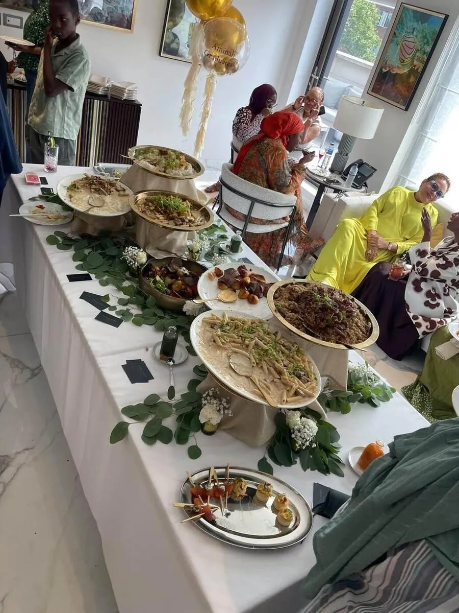

Private Chef for House Parties & Private Residences
Hosting, without the hard work
A bigger celebration at home, fully catered — so hosting it feels like a party, not a job.

A house party is one of the trickiest events to host well, because the host usually ends up working the whole night instead of enjoying it. Catering a house party or larger private residence celebration properly means a full kitchen and service team taking over everything — food, drinks and clean-up — so hosting goes back to being genuinely enjoyable.
What to expect
01What's included
A house party booking includes menu planning scaled to your guest count, a full kitchen team, service staff to keep food and drinks moving through the night, and a thorough clean-up before the team leaves — your home left exactly as it was found.
02Catering for a private residence
Whether it's a milestone birthday, an anniversary, or simply a larger gathering of friends and family, catering is planned around your specific property — kitchen size, available space, and how guests will move through the home across the evening.
03Bar service included
Food and bar service are commonly booked together for a house party, with drinks planned alongside the menu as one coordinated evening rather than two separate bookings.
04Noise, neighbours & practical logistics
Larger home celebrations often come with practical considerations beyond the food itself — parking for suppliers, timing deliveries around neighbours, or working within a property's own layout and access points — and these are discussed as part of planning so the day runs smoothly before a single guest arrives.
05Combining catering with entertainment or hired extras
Where a house party also involves hired entertainment, a marquee, or other external suppliers, the catering team is used to coordinating timing and logistics alongside other vendors, rather than operating in isolation from the rest of the event.
06Choosing between a seated meal and a roaming buffet
A house party can be catered as a formal seated meal, a relaxed roaming buffet guests can return to throughout the evening, or a mix of both — canapés and a buffet spread for the main party, with a smaller seated moment for close family — and the right format is discussed based on your guest list and how the evening is expected to flow.
07Garden & marquee setups
Many larger house parties move outdoors into a garden or a hired marquee, and the kitchen team is experienced working from a temporary outdoor setup when a property's own kitchen isn't large enough to serve the full guest list comfortably.
08A trial run for a bigger future event
Some hosts use a smaller house party as a way to experience the catering and service style before committing to a much larger event — a wedding or milestone celebration — later on, which the team is happy to accommodate.
09Insurance & property care
Appropriate care is taken throughout a booking to protect a property and its contents, from how equipment is set up to how the kitchen and wider home are treated during service, so a larger gathering never comes at the cost of the property itself.
10Food that keeps guests moving
House parties succeed when food is easy to enjoy while standing, talking and moving between rooms. Alejandro Nicolau designs spreads that look generous, stay fresh and are simple for guests to eat, with a few showpiece dishes to give the evening a focal point.
11Working in a home
The team respects the layout of your property, protects surfaces, works quietly and keeps the kitchen under control throughout. Service is planned so that rooms stay uncluttered and guests can enjoy the whole home.
12Relaxed food for a good party
A house party needs food that people can enjoy with a drink in one hand. Canapés, sharing plates, grazing tables and live stations all work well, and the style can range from casual to elegant. The aim is food that keeps the party moving, with enough variety and volume that guests are well looked after.
13Easy to host, easy to clean up
With the food and service handled by the team, you can enjoy the party as a guest. Alejandro arrives early, sets up, serves through the evening and leaves your kitchen clean. Bar service can be added to complete the evening, and late-night snacks are a popular finish.
14Where we cook
Alejandro cooks in private homes and venues across London, including Mayfair, Kensington, Chelsea, Knightsbridge, Belgravia, Notting Hill, Marylebone, Hampstead, St John's Wood, Wimbledon. He also travels for events across the United Kingdom, including Surrey, Windsor, Henley-on-Thames, the Cotswolds, Oxford, Cambridge, Brighton, Bath, Edinburgh, Manchester. You can see every area on the locations page, or send your address and date through the enquiry form to confirm availability.
Private Chef for House Parties & Private Residences: FAQs
What size of house party can be catered for?
Alejandro Nicolau caters for house parties from a mid-sized gathering of family and friends to a larger celebration for a hundred or more guests, with staffing scaled to match.
Is bar and drinks service included, or booked separately?
Both options exist. Many house parties combine food and bar service from Alejandro Nicolau as one coordinated booking, though each can also be arranged separately.
Will the team handle clean-up afterwards?
Yes. Alejandro Nicolau's team includes a full clean-up as standard and leaves your home exactly as it was found.
Can the menu be planned around how guests will move through my home during the party?
Yes. Alejandro Nicolau plans service around your property's layout, including where food and drinks stations work best for how guests will circulate.